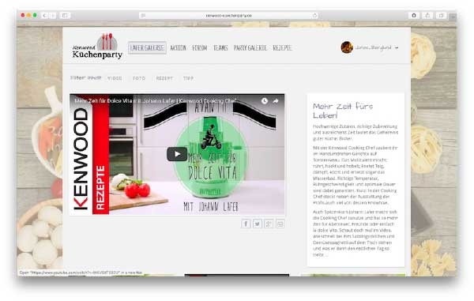
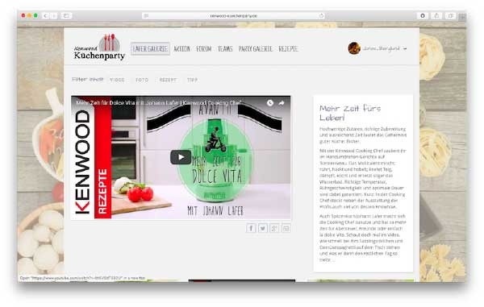
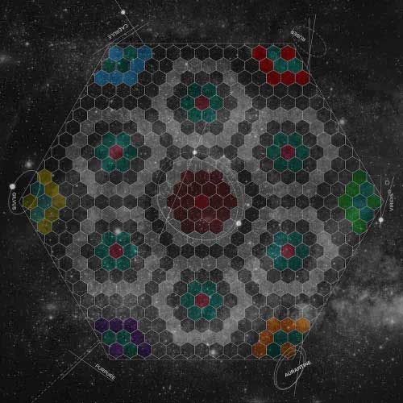
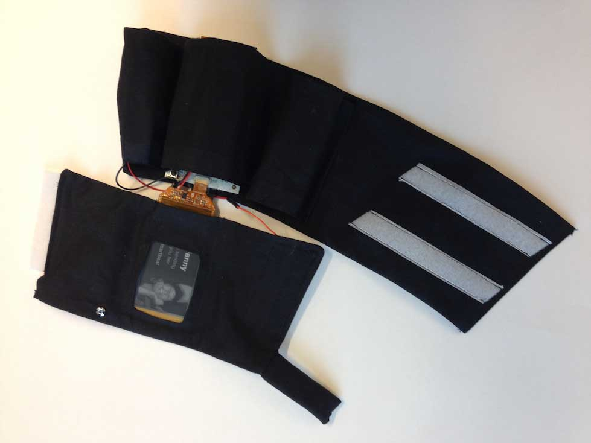

Things I've done
Master Thesis
Master Thesis in Interaction Design
Designing for Large Touch Screens
In this master thesis project, me and my friend touched on an interaction paradigm for large touch screen displays. During the thesis, a user study was carried out with 26 participants where an elicitation methodology was used to investigate some commonly used actions were finally a set of 10 unique primary gestures (and a few secondary gestures) were defined. We conducted the thesis together with Chalmers University and the company Yolean, but the users study was carried out in Istanbul, Turkey as a collaboration with Koc University.
Some of the biggest challenges for us was to plan and execute our first real user study which involved a lot of detailed planning and all while doing it in a country we've never been to.
My main responsibilities were (among more) developing prototypes, writing scripts, setting up the user study room, and participation recruitments
Based on this project we did also write a paper that was submitted and accepted at Interact 2017.
The paper is published here.
ARubik
ARubik
This was a 9 week project with the theme of the “Interactive Science Center” in collaboration with Chalmers and Universeum. The project involved the whole design process from client analysis and user research to ideation, prototyping and evaluation.
In this project I was head of creating the prototype which ended up being a Augmented Reality App developed in Unity for Google Cardboard. The prototype guided first time users to solving the Rubik’s cube without any prior knowledge. The prototype was later explored by many at 2 day exhibition with many happy users.
KJ-Brainstorming
Early prototype
Promo picture
Kenwood-Küchenparty
Kenwood-Küchenparty
Project to develop a web site for a German cooking competition.
I did all the front end development, focused on recreating the design from idea to code.
http://www.kenwood-kuechenparty.de
Project done as consultant at Chalmers Teknologkonsulter
 

Radiomast
Radiomast
Hacked together during Hack Out West 2015
This app allows you to be a radio host or listener. Having the full music catalogue of Spotify Premium at your fingertips you can start to make the best live radio ever made!
The biggaste challange was to design and develop the whole porject within 2 days
Check it out at hackoutwest15.herokuapp.com or github.com/HackOutWest15/radiomast
iOS application
+200h iOS project
Developed at CTK during 2015.
Native IOS application developed in Objective C.


Bella Stellaria
Project in Gameplay design course at M.Sc.Interaction Design at Chalmers, 2015.
Space! The final frontier! Where no person has gone before! Take command of a fleet of starcrafts and secure the future of humankind. Explore, expand, eliminate your foes. Take advantage of the uncertainties of space, but beware of hidden dangers. You are the representative of one of the Big Six, massive organisations, venturing out from a dying Earth to occupy Kepler22B. But you are not alone. Others are on the same quest. In order to succeed you will have to engage in thrilling space combat, use the resources you capture from your enemies against them as you expand your fleet of spacecrafts, and move ever closer to your goal of colonisation!
The design process used when developing Bella Stellaria is brought from Fullerton (2008) and contains the steps conceptualization, prototyping and playtesting.
This game was developed together with Marie Larsson, Fanny Lindh, Johannes Lundqvist Bruno Söderström and Anna Weiss.
Alla graphics made by Anna Weiss.
Initial brainstorming session
Playtesting session
Design of the board
Embrace
Project in Tangible Interaction course at M.Sc.Interaction Design at Chalmers, 2015.
This paper was presented at the Student Interaction Design Research conference (SIDeR) in Kolding, Denmark in March 2015.
In this study we present Embrace; a wearable device that explores the potential of wearable technology harnessing the affordance of human form and deformable displays. We research new ways of communicating with loved ones in order to improve the experience of connectedness when they are apart. Embrace is a wearable device in the form of a bracelet that shares emotion between peers by providing both visual and haptic feedback. Other devices like smartphones and tablets have a rigid form and material. In contrast, the deformable display used in Embrace enables the user to wear the technology seamlessly on the body. The haptic feedback for sharing emotions is believed to provide a different experience since the physical sensation is more close to feeling heartbeats, hugs, and skin contact, compared to only visual information of today’s mobile devices.
Read more at: http://ixdcth.se/courses/2014/ciu180/node/40 Video: http://youtu.be/2givLSAb4dU Paper: https://publications.lib.chalmers.se/publication/213808
Reversed brainstorming
3-6-5 brainstorming method

Error analysis
Testing prototype
Working prototype
Drinking Buddy
Project in Designing User Experience course at M.Sc.Interaction Design at Chalmers, 2015.
Critical design project with focus on User Experience
A drinking buddy in your phone that you can share drinks, discuss and rate beverages and get suggestions from.
It’s all nice and fun. But, over time the Buddy starts to develop alcoholism.
Eventually, you are not friends anymore. It's game over and you are revealed with a background story based on real behaviours from a real person.
Some of the feedback I got from this project were: "We really liked how you describe your process in designing this!" "The design itself is both very coherent and strong" "Great process, good design meeting the set goal and well executed"
Inspiring research to this project: 1. Gaver, W. W., Beaver, J. and Benford, S. (2003) Ambiquity as a resource for design 2. Dunne, A., and Raby, F. (2001) Design Noir: The Secret Life of Electronic Objects 3. Brophy-Warren, J. (2009) The Board Game No One Wants to Play More Than Once 4. Lundgren, S. (2013) Toying with Time: Considering Temporal Themes in Interactive Artifacts 5. Bardzell, J. and Bardzell, S. (2013) What is “Critical” about Critical Design? 6. Backlund, S., Gustafsson, A., Gyllenswärd, M., Ilstedt-Hjelm, S., Mazé, R. Redström, J. (2006) Static! The Aesthetics of Energy in Everyday Things 7. VAN Gorp, T. and Adams, E. (2012). Design for Emotion - Chapter 5 8. Janlert, L-E. and Stolterman (1997) E: The character of things
Sketching ideas on paper
Workflow used during project
Designing screenshots in Illustrator

HomeIQ
Project Description
This was a project at the Interaction Design masters program at Chalmers University of Technology.
Developed during the autumn of 2014.
HomeIQ is a company that delivers advanced settings-systems for homes and office buildings. It consists of sensors measuring indoor and outdoor temperature, outdoor lighting conditions and a burglar alarm that basically keeps track of if someone is in the house. Using the data from these sensors, plus system data (time, day etc) the system can control certain components of the home, such as lamps, outdoor lights, blinds and the temperature. Users can create rules for this using a software on their regular computer, which communicates with the system too.
Interested in more details?
VISIT MY BEHANCE PORTFOLIO |
Used Sketch 3 to design the interface